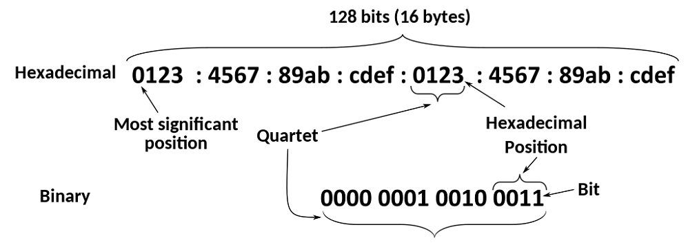
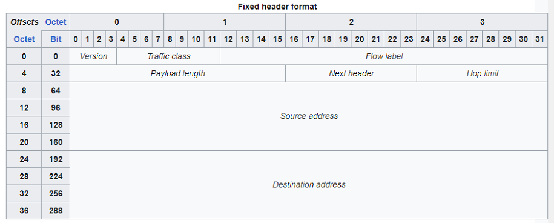

IPv6, adresování - formát paketu, prefixy, adresace v lokání síti, porovnání s IPv4
Jedná se o identifikační a lokalizační systém pro síťová zařízení na síti a cesty skrze síť. Operuje na třetí vrstvě OSI modelu.
IPv6 byla vyvinuta Internet Engineering Task Force (IETF) kvůli očividnému problému s IPv4 adresami. s kterýma se v té době plýtvalo a vypadalo že dojdou úplně a tak se také stalo. Byly vyvinuty za účelem nahrazení už zastaralého a v některých aspektech nedokonalého protokolu IPv4.
Místo dekadické soustavy využívá hexadecimální, která jde 0-9 A-F. Jedná se o 128 bitovou adresu tedy adresu s 2^128 kombinacemi adres. Dělí se do osmi skupin (po čtyřech hexadecimálních číslech) oddělených dvojtečkou, GUA a LLA.
Zaměřili se zde na device mobility, security a konfigurovatelnost při designování tohoto protokolu.
Poskytuje mnohem více adres. zjednodušuje způsob nastavení adres, zjednodušuje zpracování paketů na routerech z důvodu ponechání packet fragmentace na koncových uživatelých. Dovoluje nám tři rozdílné způsoby přenosu packetů.
Unicast (one to one) paket je poslán přímo jednomu zařízení.
Anycast (one to many of many) doručujeme paket jednomu z vybrané skupiny, nejčastěji tomu kdo je nejblíže.
Multicast (one to many of many) doručí paket skupině, doručuje simultánně při jednom přenosu.

Packet
Skládá se z headeru a payloadu. Header se zkládá z fixních 40 bajtů (320 bitů)

Version (4 bits)
The constant 6 (bit sequence 0110). Specify version of protocol that was used.
Traffic Class (6 + 2 bits)
The bits of this field hold two values. The six most-significant bits hold the differentiated services field (DS field), which is used to classify packets. Currently, all standard DS fields end with a '0' bit. Any DS field that ends with two '1' bits is intended for local or experimental use.
The remaining two bits are used for Explicit Congestion Notification (ECN); priority values subdivided into ranges: traffic where the source provides congestion control and non-congestion control traffic.
Flow Label (20 bits)
A high-entropy identifier of a flow of packets between a source and destination. A flow is a group of packets, e.g., a TCP session or a media stream. The special flow label 0 means the packet does not belong to any flow (using this scheme). An older scheme identifies flow by source address and port, destination address and port, protocol (value of the last Next Header field). It has further been suggested that the flow label be used to help detect spoofed packets.
Payload Length (16 bits)
The size of the payload in octets, including any extension headers. The length is set to zero when a Hop-by-Hop extension header carries a Jumbo Payload option.
Next Header (8 bits)
Specifies the type of the next header. This field usually specifies the transport layer protocol used by a packet's payload. When extension headers are present in the packet this field indicates which extension header follows. The values are shared with those used for the IPv4 protocol field, as both fields have the same function (see List of IP protocol numbers)
Hop Limit (8 bits)
Replaces the time to live field in IPv4. This value is decremented by one at each forwarding node and the packet is discarded if it becomes 0. However, the destination node should process the packet normally even if received with a hop limit of 0.
Payload
Obsahuje data packet z vyšších vrstev, navíc může obsahovat i extension header.
Extension headers
Carry optional internet layer information and is placed in between the fixed header and the upper-layer protocol header. Extension headers form a chain, using the Next Header fields. The Next Header field in the fixed header indicates the type of the first extension header; the Next Header field of the last extension header indicates the type of the upper-layer protocol header in the payload of the packet. All extension headers are a multiple of 8 octets in size; some extension headers require internal padding to meet this requirement.
Bez speciálních options, payload musí být menší než 64kB. S Jumbo Payload option (in a Hop-By-Hop Options extension header) payload může dosahovat velikopsti 4GB.
Narozdíl od IPv4, router nikdy nefragmentuje packety. Pokud dochází k fragmentaci tak jenom na klientovy ovšem klient se za pomocí PMTUD(Path MTU discovery) snaží určit maximum tansmit unit (MTU) velikost na síti mezi dvěma hostama normálně s cílem se vyhnout fragmentaci.
Rozsahy
Globální internet
Address block (CIDR)
First Address
Last Address
Number of Addresses
Usage
Purpose
64:ff9b::/96
64:ff9b::0.0.0.0
64:ff9b::255.255.255.255
2^32
The global internet
IPv4/IPv6 translation.
2001::/32
2001::
2001:ffff:ffff:ffff:ffff:ffff:ffff:ffff
2^96
The global internet
Teredo tunneling.
ff00::/8
ff00::/8
ffff:ffff:ffff:ffff:ffff:ffff:ffff:ffff
2^120
The global internet
Multicast address.
Privátní internet
Address block (CIDR)
First Address
Last Address
Number of Addresses
Usage
Purpose
64:ff9b:1::/48
64:ff9b:1::
64:ff9b:1:ffff:ffff:ffff:ffff:ffff
280, with 248 for each IPv4
Private internets
IPv4/IPv6 translation
fc00::/7
fc00::
fdff:ffff:ffff:ffff:ffff:ffff:ffff:ffff
2^121
Private internets
Unique local address
Link Local
Address block (CIDR)
First Address
Last Address
Number of Addresses
Usage
Purpose
fe80::/64 from fe80::/10
fe80::
fe80::ffff:ffff:ffff:ffff
2^64
Link
Link-local address
Loop back
Address block (CIDR)
First Address
Last Address
Number of Addresses
Usage
Purpose
::1/128
::1
::1
1
Host
Loopback address - a virtual interface that loops all traffic back to itself, the local host
Software
Address block (CIDR)
First Address
Last Address
Number of Addresses
Usage
Purpose
::/128
::
::
1
Software
Unspecified address
::ffff:0:0/96
::ffff:0.0.0.0
::ffff:255.255.255.255
2^32
Software
IPv4-mapped addresses
::ffff:0:0:0/96
::ffff:0:0.0.0.0
::ffff:0:255.255.255.255
2^32
Software
IPv4 translated addresses
2001:20::/28
2001:20::
2001:2f:ffff:ffff:ffff:ffff:ffff:ffff
2^100
Software
ORCHIDv2
GUA vs LLA
Každé zařízení vyžaduje Link Local Adresu (Jedná se o unicast network adres) s prefixem fe80::/10 následující 54 bity pro subnetting ale většinou jsou nulové a 64 bitů pro identifikaci zařízení. link-local address autoconfiguration. Link local adresa není routable mimo svojí lokální síť narozdíl od GUA.
GUA (Global unicast address) narozdíl od LLA je routable i z internetu tedy mimo lokální síť. Prefix GUA je tvořen router prefixem (pokud je nastavení GUA za pomocí SLAC) a druhá část je náhodně vygenerována nebo vytvořena z mac adresy. Pokud je využít DHCPv6 server v jakém tvau bude adresa rozhoduje on. Ovšem LLA se stále bude nastavovat automaticky pokud je nenastavíme staticky.
Zařízení na síti si může přiřadit samo IPv6 adresu bez kooperace s DHCP serverem tento proces se nazývá link-local address autoconfiguration nebo SLAC(state less auto configuration).
Vytváříme ji pomocí generace nějakého náhodného čísla.
Vytváříme za pomocí mac adresy (EUI-64 Format)
Poté co se nastaví hodnota hodnota IP adresy pošle se speciální DAD (Duplicate Address Detection) packet. Pokud žádný host na síti neodpoví zřízení si IPv6 adresu ponechá.
IPv4 vs IPv6
IPv4
IPv6
32-bit address length
128-bit address length
Supports Manual and DHCP address configuration.
Supports Auto and renumbering address configuration.
End to end connection integrity is Unachievable.
End to end connection integrity is Achievable.
Can generate 4.29x109 address space. 232
It can produce address space of 3.4x1038. 2128
The security feature is dependent on the application.
IPSEC is an inbuilt security feature in the IPv6 protocol.
Address representation of IPv4 is in decimal.
Address representation of IPv6 is in Hexadecimal.
Fragmentation performed by Sender and forwarding routers.
Fragmentation is only performed only by the sender.
Packet flow identification is not available.
IPv6 packet flow identification is available and uses the flow label field in the header.
Checksum field is available.
Checksum field is not available.
Has a broadcast Message Transmission Scheme.
Multicast and Anycast message transmission scheme is available.
Encryption and Authentication not provided.
Encryption and Authentication provided
Has a header of 20-60 bytes.
Has a header of 40 bytes fixed.
Can be converted to IPv6.
Not all IPv6 can be converted to IPv4.
Consists of 4 fields which are separated by dots (.)
Consists of 8 fields, which are separated by colon (:)
Divided into five different classes. Class A,B,C,D,E.